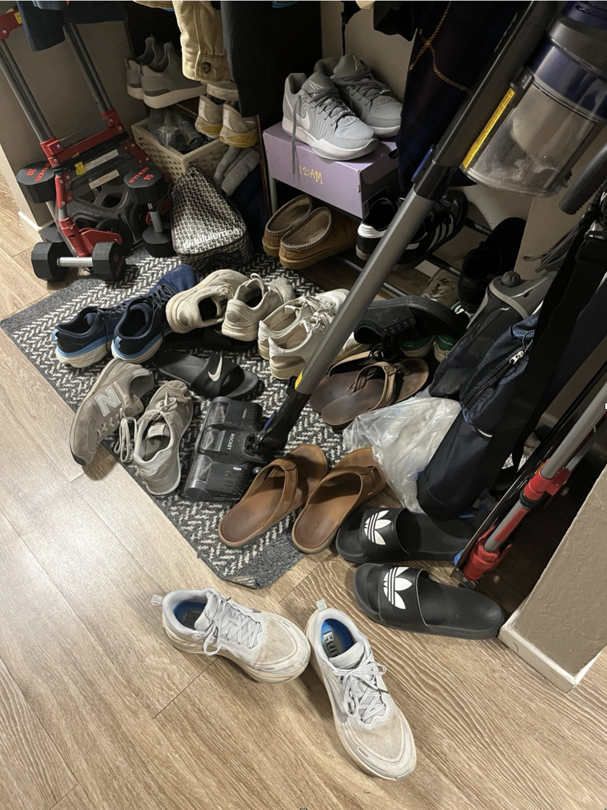

A pick-and-place pipeline that perceives a pile of shoes, picks one up with a UR7e, and places it on a rack — built on GroundingDINO + SAM for vision, a custom point-cloud grasp filter, and MoveIt for motion planning.

Provide robust robotic assistance to people with limited mobility and students by organizing a random scene of shoes through placement on a rack.
The full loop runs four stages — perception, point-cloud reasoning, grasp verification, and motion execution — then repeats for the next approved shoe.
Finetuned GroundingDINO + SAM produce a labeled mask. The mask is fused with the dense depth map into a per-shoe point cloud.
Per-shoe point clouds are cleaned with class-specific filters to isolate the top surface of the shoe.
A target grasp point and SO(2) rotation are extracted from the filtered cloud and verified against the rack-side preview UI.
MoveIt plans a collision-free trajectory; the UR7e executes the pick-and-place. Loops over every approved shoe in user-specified order.
Each frame from the wrist-mounted camera is passed through a finetuned GroundingDINO + SAM stack. We get tight bounding boxes, a per-pixel mask, and a class label with confidence for every shoe in the scene.
Once a shoe is segmented, we need a single 3D point the gripper can actually close on. Shoes are deformable and class-dependent, so we use a different point-cloud filter per category.
We crop the point cloud to the outer 20% at each end of the sneaker, keep the top 10% by height, and take the higher of the two medians as the grasp target. This pushes the gripper toward the heel collar, where the material is rigid enough to lift cleanly.
Difficulties: flexible upper material (gripper depth varies), orientation-specific approach.
After transferring the 2D pixel mask onto the depth point cloud, we keep only the top 8 mm by height and take the median of that slab as the grasp target. The thin "top layer" trick works on both soft slippers and flat flip-flops without per-shape tuning.
CV point → IK → MoveIt path → execute → repeat.
CV pipeline output: target grasp point + SO(2) orientation.
IK planner converts target pose to a feasible UR7e joint state.
MoveIt motion planning generates collision-free trajectories.
--order 0 1 2 … )Recordings of the UR7e running the full pipeline. Drop in the .mp4 files (or paste an embed URL) where the placeholders sit below.
To embed a video: replace each
<div class="video-placeholder">…</div> with a
<video src="…" controls></video> or a YouTube
<iframe>.
The full ROS 2 source, CV pipeline, and shoe-approval web UI are open on GitHub.
→ github.com/shimamooo/106a-final-project
Quick start: ros2 run ur7e_utils enable_comms then
ros2 launch planning lab5_bringup.launch.py